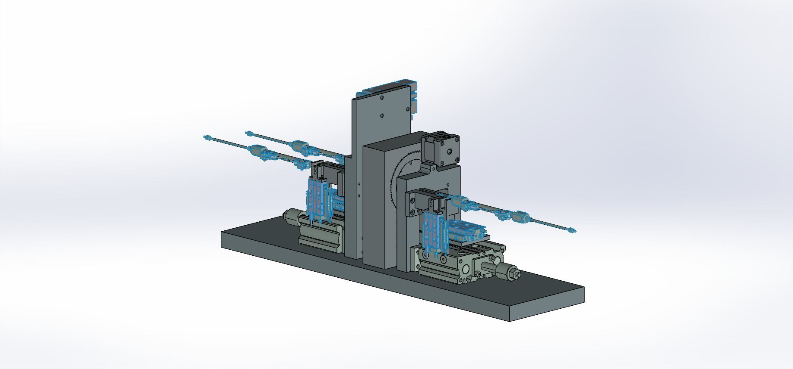
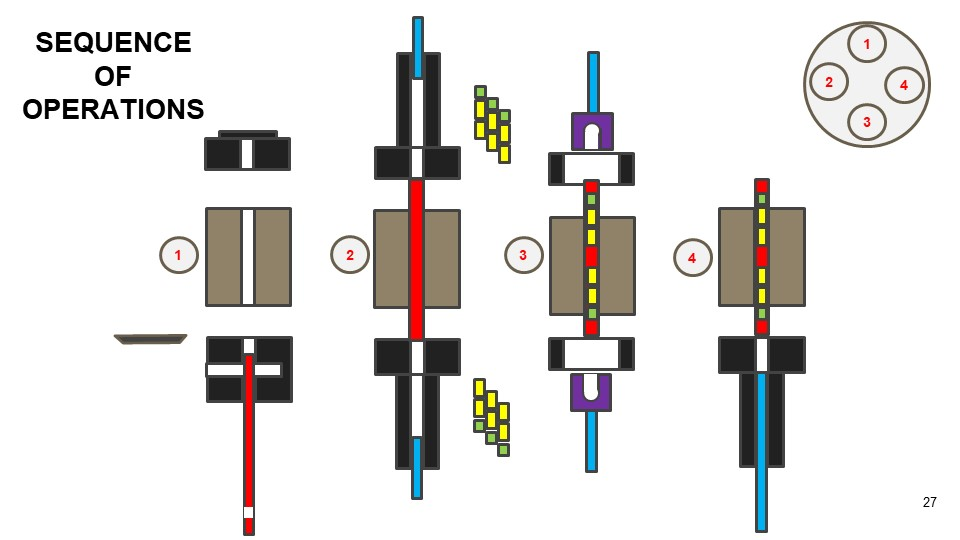
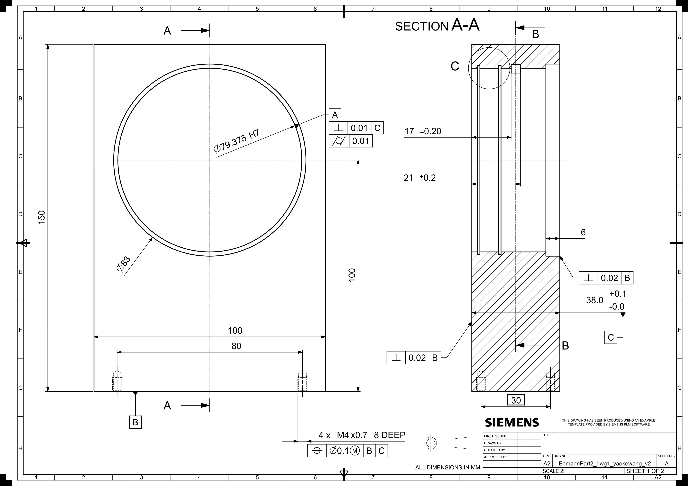
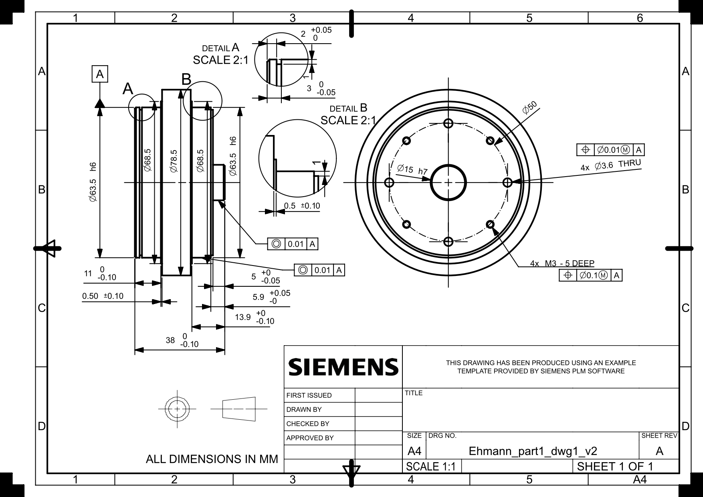
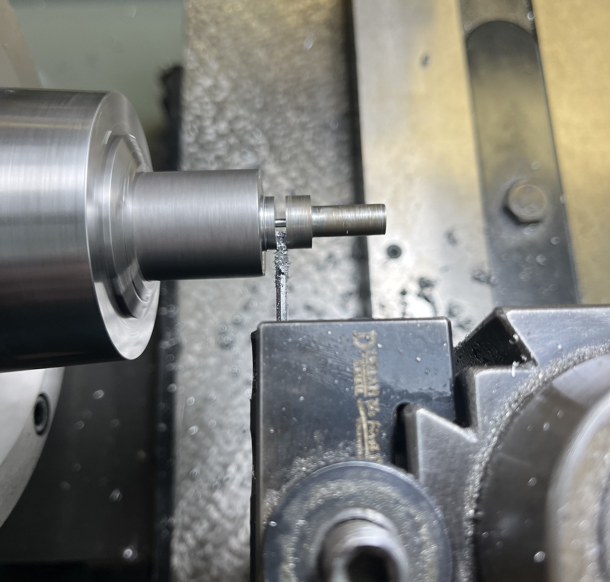

HIV Implant Automation






Collaborators:
Introduction:
In the fall of 2023, I began as a research assistant working to design, manufacture, and assemble a machine that makes HIV implant medication. This project was previously progressed by grad students, and I picked up the project after they graduated.
Goal:
The end goal of this project is to have a functioning machine that can produce HIV arm implants without human assistance. The machine has 4 steps:
- First, cut cannula tubes made from TPU to length.
- Second, seal one end of the machine.
- Third, insert the medication tablets.
- Fourth, seal the other end and remove the implant from the assembly line.
Completed Tasks:
Thus far, this project has been a mess to say the least. Many of the components were either designed incorrectly or manufactured incorrectly. Below is a list of tasks I have completed or am working on for this project:
- Bushings: The baseplate was manufactured with m5 clearance holes while the tombstone was drilled with m4 screw holes. Working with a shop professional, we measured the required dimensions, drew a schematic, then using the lathe, I manufactured bushings as an "adapter" between the two surfaces.
- Gear Mounting: One issue with the tombstone, the center component of the machine was that it was missing a clearance hole for a small gear. A small gear attached to a stepper motor was designed to rotate a large center gear which performs the tasks of the machine. This hole was missing, so after learning about pitch diameters, I measured and milled the clearance hole for the small gear.
- Logistical Operations: Many machine components were missing when I began this project. The BOM included certain components not included in the CAD model and both of which included many components I was missing. After conversations with my professors, I specified, contacted, and ordered the components required to assemble this machine.
Future Tasks:
Moving forward, there are many parts of this machine that need to be finished. For starters, the left loader, intended to hold the medication while pneumatics insert them into the cannula, has misaligned holes. Therefore, there is no real way to insert the medication until new holes are located and drilled. The pneumatics still need to be programed as well as the stepper motor and the cutting mechanism. The sealers need to be mounted to the assembly, and a mechanism to drop the medication into the loaders still needs to be designed, manufactured, and attached.
Despite this harrowing ordeal in front of me, I am excited to work on and ideally finish this machine one day!
Skills Gained:
CAD
Engineering Drawings
Sketching
Lathe
Milling
Logistics